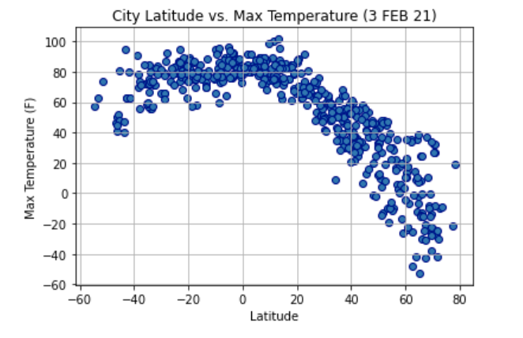

Summary: Latitude vs. X

The purpose of this project was to analyze how weather changes as you get closer to the
equator. To accomplish this analysis, we first pulled data from the OpenWeatherMap API to
assemble a dataset on over 500 cities.
After assembling the dataset, we used Matplotlib
to plot various aspects of the weather vs. latitude. Factors we looked at included:
temperature, cloudiness, wind speed and humidity. This site provides the source data and
visualizations created as part of the analysis, as well as explanations and descriptions
of any trends and correlations witnessed.